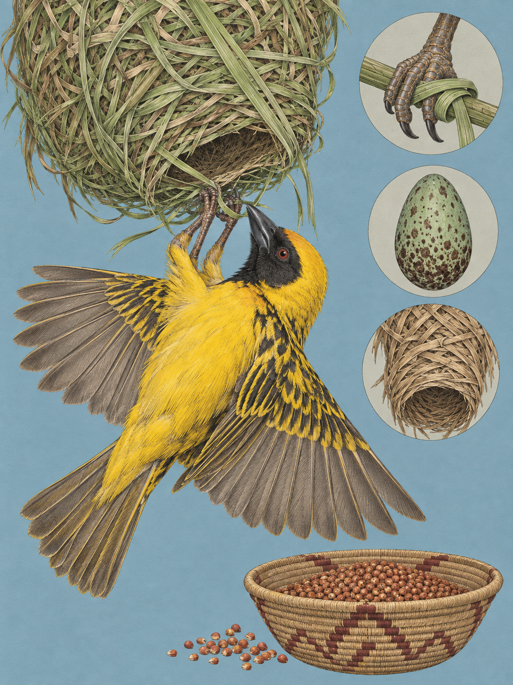

NAIROBI
Ploceus cucullatus
Swahili: „Kwera nguya“, Maa: „Ol-orogos“

In Nairobi hängt ein grünes Nest unter einem Ast, und ein Vogel arbeitet kopfüber daran. Der Dorfweber folgt dem Menschen bis in Dörfer, Städte und Hotelanlagen. Zwischen Ästen und frischem Gras entsteht eine Hohlkugel, deren Eingang nach unten zeigt. Der erste Eindruck ist ein Nest. Der zweite ist eine Arbeit aus Zug, Spannung und Knoten. Ihr Bau beginnt mit einem einzelnen Streifen.
Der Dorfweber ist 15 bis 17 Zentimeter lang, ungefähr so lang wie eine menschliche Handfläche. Sein kenianisches Durchschnittsgewicht beträgt 39,9 Gramm, etwa so viel wie zwei AA-Batterien. Die Flügelspannweite misst 20 bis 24,9 Zentimeter. Im Brutkleid trägt das Männchen einen schwarzen Kopf, einen kräftigen schwarzen Schnabel und leuchtend gelbes Gefieder. Rücken und Flügel sind schwarz und gelb gestreift oder gefleckt, die Iris dunkelrot bis orangerot. Außerhalb der Brutzeit wird der Kopf gelb, der Scheitel olivfarben, die Oberseite grauer und die Unterseite weißlicher. Weibchen bleiben unauffälliger, Jungvögel haben einen brauneren Rücken. Insgesamt werden derzeit acht Unterarten wissenschaftlich unterschieden. Auf der Reise durch Kenia sind primär eine westliche und eine östliche beziehungsweise zentrale Unterart zu erwarten. Beide tragen dieselbe Geschichte aus Gras und Knoten.
Der wissenschaftliche Name lautet Ploceus cucullatus. Das Artepitheton cucullatus stammt vom spätlateinischen cucullus und bedeutet „kapuzentragend“. Gemeint ist der dunkle Kopf des Männchens über dem gelben Körper. 1776 beschrieb Philipp Ludwig Statius Müller den Vogel als Oriolus cucullatus in seiner deutschsprachigen Übersetzung von Linnés Systema Naturae. 1790 vergab John Latham den Namen Oriolus textor, aus dem später zeitweise Textor cucullatus wurde. Auf Swahili heißt der Vogel Kwera nguya, in der Sprache der Maa Ol-orogos.
Das eigentliche Talent des Dorfwebers zeigt sich im Material. Das Männchen schneidet mit dem konischen Schnabel in einen Palmwedel oder in hohes Gras und reißt im Flug einen frischen, biegsamen Streifen ab. Er ist 30 bis 60 Zentimeter lang. Dann sucht der Vogel meist zwei nach unten hängende Äste unter einer Astgabelung. Mit je einem Fuß greift er nach einem Ast, hängt kopfüber und behält diese Fußstellung während des Bauens bei. Die Reichweite des Schnabels bestimmt den Radius der Konstruktion. Die Grundbewegung ist festgelegt, ihre Ausführung wird mit Alter und Übung schneller und sicherer.
Der Dorfweber legt die Streifen nicht einfach übereinander. Er bindet echte Knoten. Eine umgekehrte Wicklung fixiert die ersten Streifen an der rauen Rinde und erzeugt Reibung. Beim halben Schlag zieht der Vogel das Ende durch eine Schlaufe. Überhandknoten sichern lose Enden, ein Schiebeknoten hält Schlaufen veränderlich und zieht die tragenden Ringe unter Spannung zusammen. Der Bau beginnt als Ring und wächst zu einer nieren- oder eiförmigen Hohlkugel. Im Inneren trennt eine Schwelle die Brutkammer vom Eingangsraum, damit die Eier bei starkem Wind nicht herausfallen. Danach wird der Eingang nach unten als Röhre verlängert, was besonders baumkletternden Schlangen den Weg erschwert.
Das Dach wird mit kurzen, breiten Gras- und Blattstreifen abgedichtet, damit Regenwasser abläuft. Das Weibchen kleidet den Boden später mit weichen Grasrispen und Federn aus. Für ein einziges Nest braucht ein Männchen bis zu 500 Einzelflüge und durchschnittlich acht bis 18 Tage. Ist die Arbeit beendet, hängt es kopfüber am Eingang, schlägt vibrierend mit den Flügeln und singt. Das Weibchen prüft die Architektur und die Frische des Materials. Grünes Gras verliert beim Trocknen an Elastizität und Festigkeit. Ein mangelhaftes Nest lehnt es ab und ignoriert es. Das Abreißen übernimmt ausschließlich das Männchen, um den Bauplatz für einen neuen Versuch freizumachen.
Nicholas und Elsie Collias erforschten diesen Ablauf und veröffentlichten 1962 ihre Studie zum Nestbau. Sie zeigten, dass die grundlegenden Bewegungen angeboren sind, Knotentechnik und Geschwindigkeit aber mit Alter, Übung und Erfahrung besser werden. Der Ablauf sieht also instinktiv aus und bleibt doch lernfähig. In offenen und halboffenen Landschaften, an Waldrändern, in Feuchtgebieten und auf Feldern suchen große, laute Schwärme tagsüber auf dem Boden und in der Vegetation nach Sämereien, Gräsern und Getreide. Früchte, Nektar und grüne Pflanzenteile ergänzen die Nahrung. Wenn Küken versorgt werden, jagen die Vögel intensiv Insekten und Larven. Oft mischen sich die Schwärme mit anderen Webern. Sie nutzen dabei den offenen Boden ebenso wie die höheren Schichten der Vegetation.
Ein Männchen baut nacheinander bis zu fünf Nester und paart sich mit bis zu fünf Weibchen. In einem Brutbaum können acht bis 100, teils bis zu 150 Nester hängen. Mit dem Beginn der kurzen Regenzeit im September oder Oktober werden frische Gras- und Palmblätter verfügbar. Gleichzeitig keimen Samen, und Insekten sichern die Nahrung der Küken. Die Brutsaison reicht in der Regel bis Januar. Nach der Paarung legt das Weibchen in der Regel zwei bis drei Eier, die 14 Tage bebrütet werden. Der Diederikkuckuck legt seine Eier in die Kammern des Webers. Die Eier des Dorfwebers können weiß, grün, blau oder bräunlich, gefleckt oder ungefleckt sein. Ein einzelnes Weibchen legt zeitlebens dieselbe Zeichnung und wirft ein abweichendes Kuckucksei durch die Eingangsröhre hinaus.
Unter dem Ast hängt das Nest, knotengehalten, mit seinem Eingang nach unten. Im grünen Geflecht bleibt die Arbeit des Vogels sichtbar.
In Kenia gilt der Dorfweber als landwirtschaftlicher Schädling. In einer Studie in Westkenia fraßen die Vögel auf einem 0,12 Hektar großen Sorghumfeld trotz zweier menschlicher Vogelvertreiber annähernd 60 Prozent der Saat vor der Ernte. Durchschnittlich wurden 18 Vögel pro fünf Minuten im Feld gezählt, zeitweise bis zu 120. Ein Vogel fraß pro Anflug durchschnittlich 16 Samen, mit Spitzen bis zu 105 Samen. Landwirte versuchen unter anderem, Wildsamen am Feldrand und im direkten Feldumfeld zu entfernen. Die lauten Schwärme sind damit zugleich Nähe und Belastung.
Eine andere Überlieferung ist ausdrücklich eine historische Vermutung. In der Olduvai-Schlucht wird diskutiert, ob frühe Hominiden vor rund zwei Millionen Jahren unter Bäumen rasteten, die auch Dorfweber besiedelten. Heruntergefallene Nester hätten ihnen Knoten und Korbarchitektur zeigen können. Diese Verbindung ist umstritten und nicht gesichert. Der Bestand gilt wegen der weiten Verbreitung und der Anpassungsfähigkeit als stabil. Die IUCN führt die Art als „Least Concern“, absolute globale Bestandszahlen sind jedoch nicht verlässlich quantifiziert.
Wo und wann: Suche die Kolonien am Rand des Nairobi National Parks, im Karura Forest oder in Gärten und Hotelanlagen. Beobachte zwischen 06:00 und 12:00 Uhr oder am späten Nachmittag von 15:00 bis 18:00 Uhr. Bleibe 5 bis 10 Meter seitlich vom Brutbaum entfernt, damit das Weibchen die Nestinspektion fortsetzt.
Brennweite: 100 bis 400 mm für das kopfüber hängende Männchen und den Nestbau. 26 bis 60 mm oder 45 mm zeigt die Kolonie mit dem Baum und ihrer Umgebung.
Bild-Idee: Halte einen grünen Grasstreifen im Schnabel, den Fuß am Ast und den nach unten gerichteten Nesteingang gemeinsam fest. Für Balz und Flug mit Nistmaterial eignen sich 1/1250 bis 1/1600 Sekunden, beziehungsweise 1/2000 bis 1/2500 Sekunden im Flug.